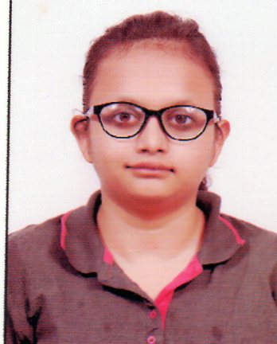

|
Vibha Bharilya
Prime Ministers Research Fellow
I am a Ph.D. candidate at the Department of Computer Science and Engineering at Indian Institute of Technology, Roorkee. I was awarded the Prime Minister's Research Fellowship in August 2023. I am associated with the ICCN (Intelligent Computing and Complex Networking) Lab.
Email /
CV /
Bio /
Scholar /
Github
|

|
Research
I am interested in the fields of safe autonomous driving. My current work focuses on developing machine learning models that predict motion of the autonomous vehicles to optimally navigate in stochastic and dynamic environments.
|
|
|
Machine Learning for Autonomous Vehicle’s
Trajectory Prediction: A comprehensive survey,
Challenges, and Future Research Directions
Vibha Bharilya,
Neetesh Kumar
Vehicular Communications, 2024
A comprehensive review that focuses on trajectory prediction methods for Autonomous vehicles.
|
|
|
A Survey of the State-of-the-Art Reinforcement Learning-Based Techniques for Autonomous Vehicle Trajectory Prediction
Vibha Bharilya,
Neetesh Kumar
2023 International Conference on Electrical, Electronics, Communication and Computers (ELEXCOM)
This survey explores the application of RL approaches in trajectory prediction, focusing on inverse reinforcement learning, deep reinforcement learning, and imitation learning.
|
Experience
Teaching Assistant
- 2023-2024 | Adarsh Bal Niketan School, IIT-Roorkee
- Spring 2024 | CSN-513 | Information and Network Security | (3L+T) | Under Prof. Sugata Gangopadhyay
- Autumn 2023 | ESC-101 | Data Structures and Algorithms | Under Prof. Sugata Gangopadhyay
- Spring 2023 | CSN-102 | Data Structures | Under Dr. Neetesh Kumar
Academic Servies
- 2023 | Reviewer in 7th International Conference on Computer Applications in Electrical Engineering-Recent Advances
|
|
{kind=link}